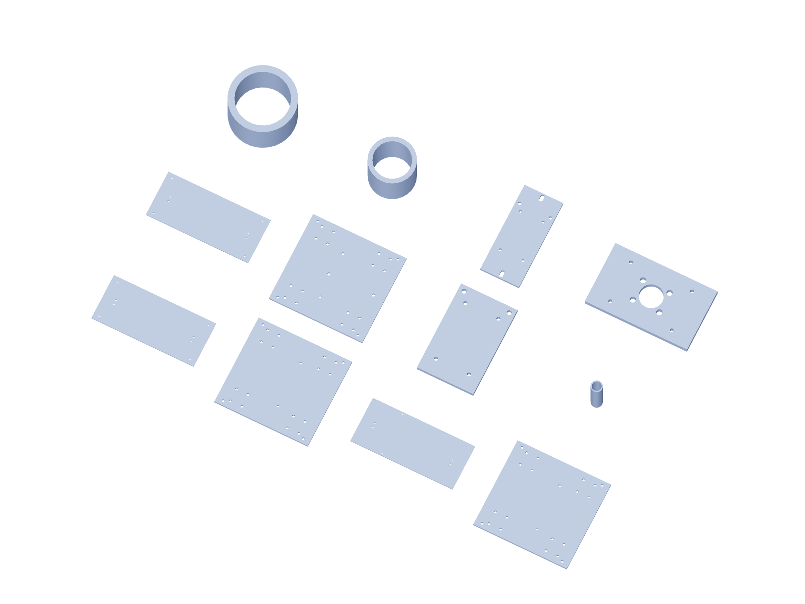

Kit / fabrication07 / 179
Metal kit / 1
6061 aluminum dimensions are finished blank sizes. Bought angles remain angles; shafts, bearings and guide blocks are separate purchased parts.

| Part | Qty | Finished blank / mm |
|---|---|---|
x-bed | 1 | 450 × 199 × 6.35 |
x-carriage | 1 | 210 × 199 × 6.35 |
y-bed | 1 | 450 × 199 × 6.35 |
y-carriage | 1 | 210 × 199 × 6.35 |
z-bed | 1 | 450 × 199 × 6.35 |
z-carriage | 1 | 210 × 199 × 6.35 |
force-gauge-backing | 1 | 70 × 110 × 6.35 |
deck-metal-spacer | 4 | 10 × 10 × 40 |
proof-gauge-rear-spacer | 4 | 10 × 10 × 7 |
proof-bearing-riser | 2 | 10 × 10 × 10 |
installed-Z-gauge-back | 1 | 70 × 160 × 6.35 |
shaft-capture-interface | 1 | 100 × 60 × 6.35 |
Use gun-positioner-drill-templates.pdf at actual size. The 3D STEP and registered projections govern formed angles and hub faces.